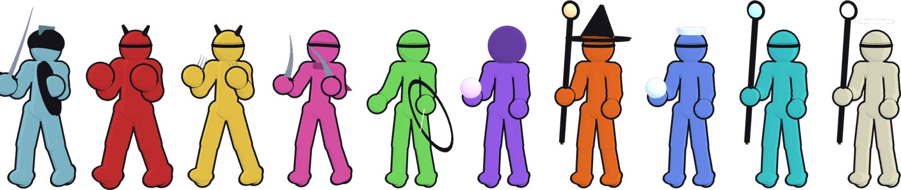
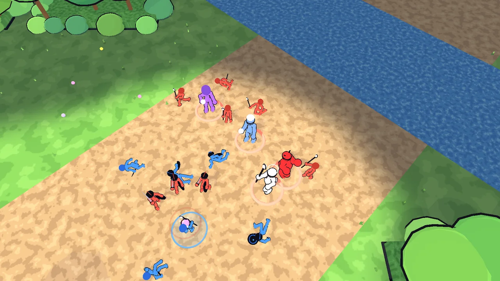
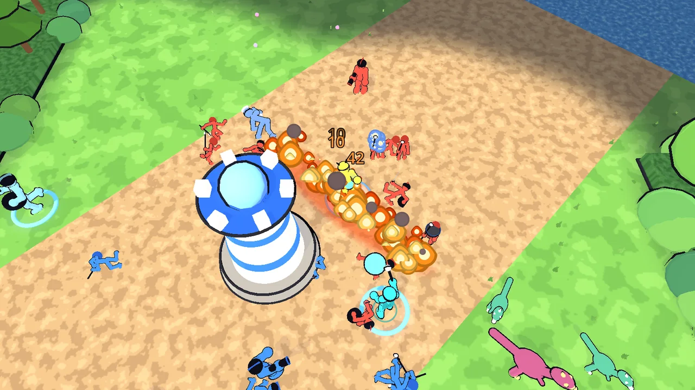
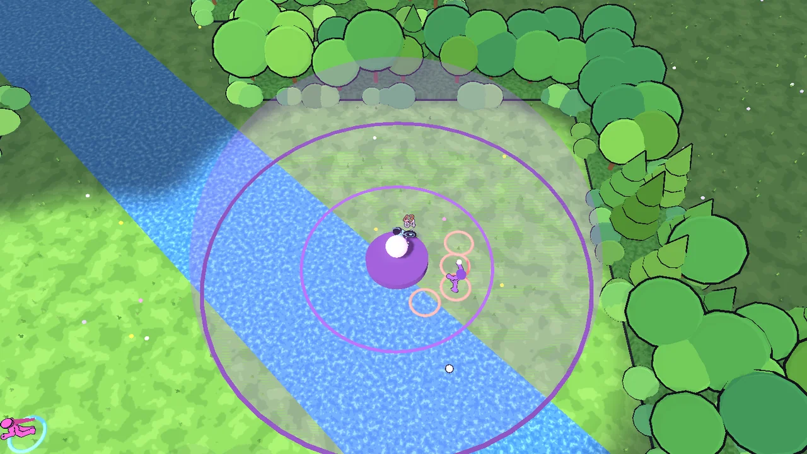

Devlog #5: The stickman look
Making a full 3D model for every hero takes time, and I want people playing sooner. So the pre-release version of the game has a new look: bold, colourful stickmen on a bright cartoon map. Every hero, minion and monster in the game now has art.

Ten heroes, all playable with art
Each hero is a jointed stickman in their own colour, with an ink outline and a dark weapon or accessory you can read at a glance: Bastion's sword, Lyra's bow, Orin's staff, Nyra's glowing orb, Sela's halo. They idle, run, attack and have a different motion for each of their four abilities. When they get hit they flinch the way the blow pushed them, and when they die they go down as a ragdoll.
The full anime models aren't going away. Orin and Kira's are still in the game files, and the stickmen are the look while the rest of the roster gets made.

Minions, towers and jungle monsters
Lane minions are smaller stickmen in team colours: melee, ranged, and siege minions carrying hand cannons. Towers are pale stone shafts banded in the team colour with a floating gem that swells as it charges a shot. Cores spin on a plinth, and both crumble when destroyed. The jungle has wolves, raptors, toads and crabs, plus bigger stickman monsters.
A forest map
The map is now textured grass, dirt lanes and a river, with jungle walls grown over with trees, pines and bushes. Fog of war dims everything your team can't see.

An effect for every attack and skill
Every basic attack, projectile and ability now has its own cartoon effect: orbs, arrows, slashes, cannonballs, trails, flashes, heal sparkles, shield bubbles and dust. Statuses show on the hero, so you can see at a glance who is slowed, rooted or burning.

Smoother online play
Behind the scenes, the server now only sends what changed since the last update each player confirmed. Updates are a fraction of the size they were, which keeps online matches smoother on slower connections.
Next
Playtesting the new look online, and polishing the relic arenas.
Proof of date
git commit c2505d2649386195afba97e71fa82de882a893c2